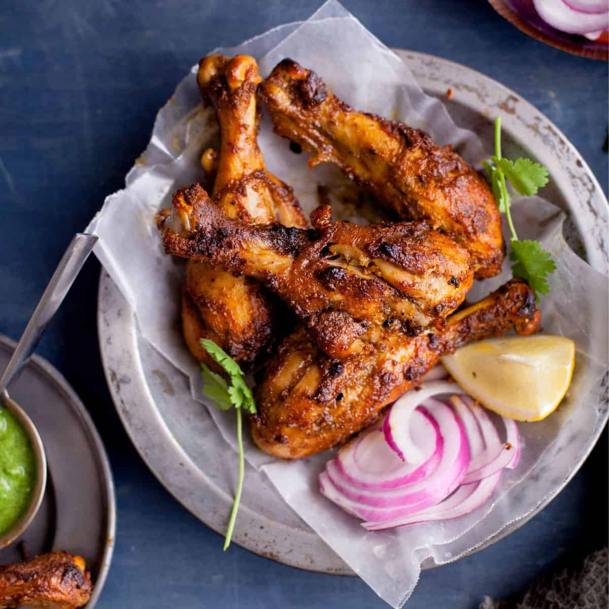

Chicken Tandoori

About the dish:
Tandoori chicken is a classic Indian dish made from chicken marinated in yogurt and spices and roasted in a tandoor, a cylindrical clay oven. Now an internationally famous recipe, this dish has a long history with similar roasted chicken recipes dating back upto 3000 B.C., originating from the Indus Valley Civilization. The modern version of the dish originated in Punjab, in pre-partition India and was popularized by the Moti Mahal restaurant in New Delhi, India in the late 1940s. It can be served as an appetiser with some green chutney or it can be served as a side with some rice.
Ingredients:
- 2 pounds chicken, cut into pieces
- 1 medium lemon, juiced
- 1 teaspoon salt
- 1¼ cups plain yogurt
- ½ medium onion, finely chopped
- 1 clove garlic, minced
- 2 teaspoons garam masala
- 1 teaspoon grated fresh ginger root
- 1 teaspoon cayenne pepper
- 2 teaspoons finely chopped cilantro
- 1 medium lemon, cut into wedges
- 1 teaspoon red food coloring (Optional)
- 1 teaspoon yellow food coloring (Optional)
Steps:
- Gather all ingredients.
- Remove and discard skin from chicken pieces. Cut slits into meat and place into a shallow dish. Season chicken on both sides with lemon juice and salt. Let sit for 20 minutes.
- Mix yogurt, onion, garlic, garam masala, ginger, and cayenne pepper together in a medium bowl until smooth, then stir in food coloring.
- Spread yogurt mixture over chicken, cover, and refrigerate for 6 to 24 hours (the longer the better).
- When ready to cook, preheat an outdoor grill for medium-high heat and lightly oil the grate. Remove chicken from marinade. Discard remaining marinade.
- Cook chicken on the preheated grill until no longer pink and the juices run clear. An instant-read thermometer inserted near the bone should read 165°F (74°C).
- Garnish with cilantro and sprinkle the lemon over it. It's ready to be served.